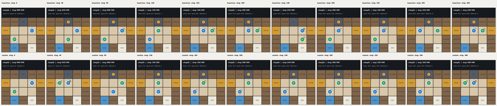
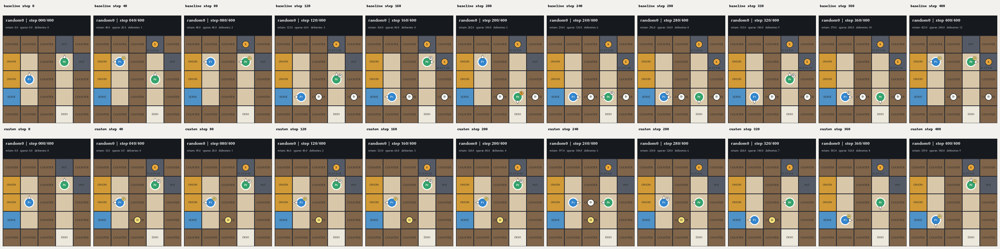
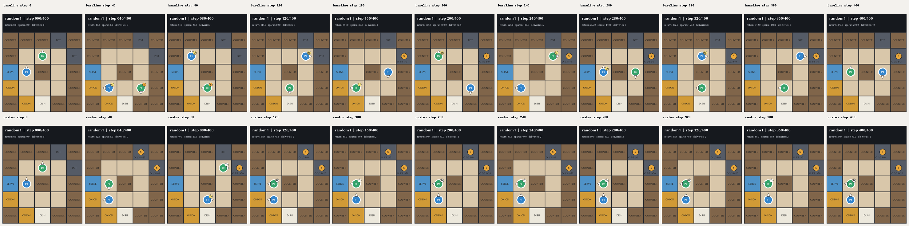
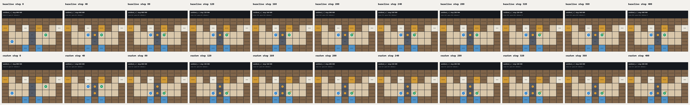

/workspace/PantheonRL/results/selfplay/ppo/_reward_shaping_diagnostics/replays/borderline_simple_seed_1

/workspace/PantheonRL/results/selfplay/ppo/_reward_shaping_diagnostics/replays/collapse_random0_seed_2

/workspace/PantheonRL/results/selfplay/ppo/_reward_shaping_diagnostics/replays/collapse_random1_seed_1

/workspace/PantheonRL/results/selfplay/ppo/_reward_shaping_diagnostics/replays/collapse_unident_s_seed_0
